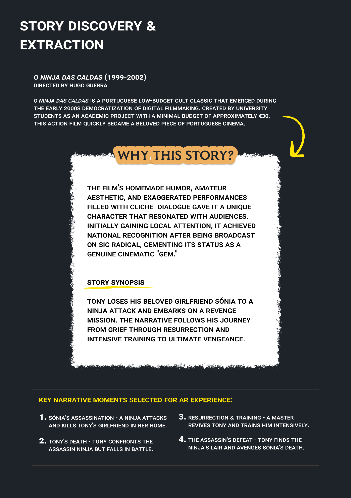
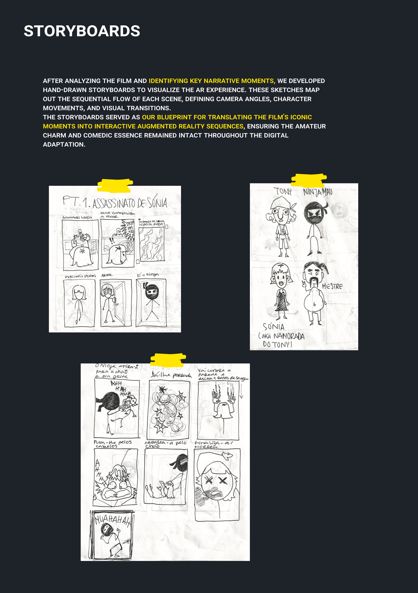
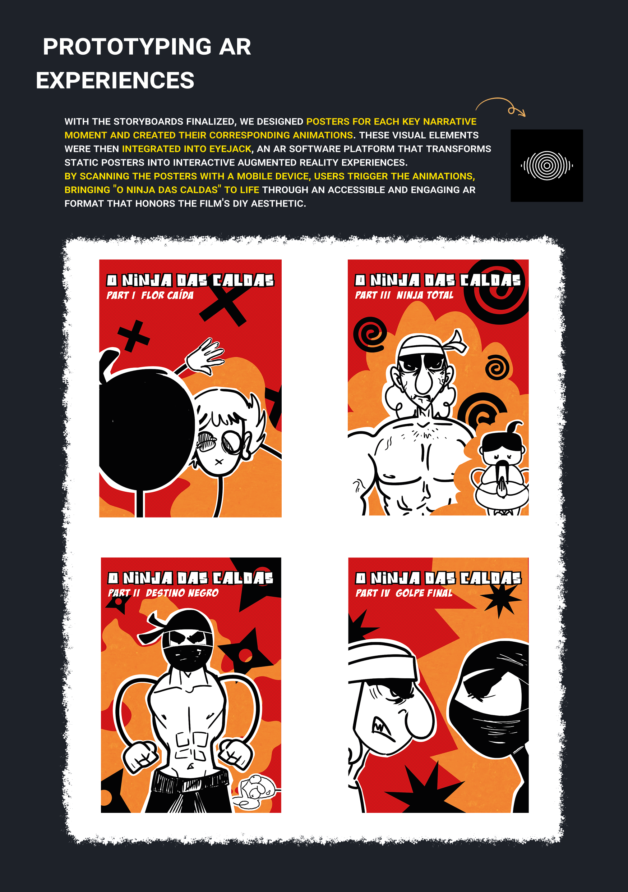
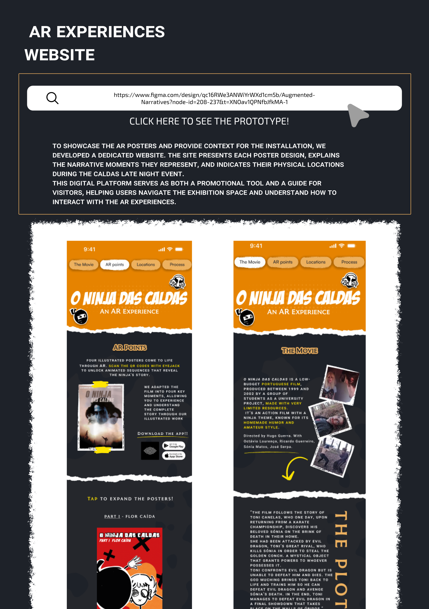

Augmented Narratives
Ninja das Caldas
- Ano: 3º ano, 2º semestre
- Ferramentas: EyeJack, Figma, Adobe Illustrator
- Tipo: Realidade Aumentada
- Colaboração: Iago Ramos
Sobre o Projeto
Este projeto documenta a adaptação do filme português "O Ninja das Caldas" numa experiência multimédia interativa. Através de quatro posters ilustrados, sequências animadas e integração de realidade aumentada usando EyeJack, criámos uma plataforma narrativa envolvente. O website mobile acompanhante funciona como documentação e interface, permitindo aos utilizadores explorar a história através de múltiplos formatos de media. O trabalho será exibido no Caldas Late Night 2026, demonstrando como a narrativa tradicional pode ser potenciada através de tecnologias digitais e imersivas contemporâneas.



